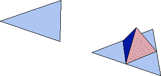

| 1. At each stage, a traingular face is replaced by 6 scaled copies of itself: |
|  |
| 2. The scale factor is |
| 3. Consequently, the dimension of a face of the Koch tetrahedron is |
| The Koch Tetrahedron consists of the union of four identical faces, so
by the union formula, the
Koch Tetrahedron has dimension |
Return to Exercises.